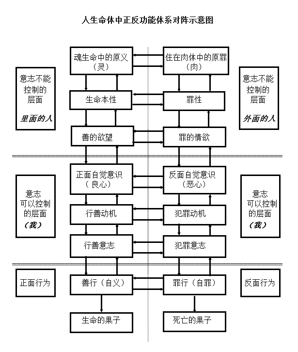

四，人生命里的活动和争战
人生命的活动可以分为内在活动和外在活动。“善人从他心里所存的善就发出善来；恶人从他心里所存的恶就发出恶来。”（太十二35，路六45）主耶稣的话告诉我们，人生命的活动始于内在善恶的存在和活动，外在活动（行为）是内在活动的延伸。
人生命的外在活动有对神和灵界的活动，对其他人的活动和身体对物质界的活动，在关系上表现出来。
人生命的内在活动除身体的生理活动之外，还有“意念”的活动。“意念” 是生命中信息的活动，在人的生命的灵魂体的不同层次，都有意念的活动。 “意念”从产生到实行可以分成不同的阶段：如，本性，本能，欲望，自觉意识，动机，逻辑思维，意志，行为等。
人内在的生命活动关乎到罪的产生，信心爱心的产生，观念的建立，意志的建立，生与死等，对得救和生命长进非常重要。魂的思想（心）是灵与肉意念的战场。
前面我们讨论了一些有关罪和义的问题，神造的人本来是好的，人原有的品质是义的；罪是外来的、后来的危害生命的因素，因此在人的生命内部形成了两极的活动和争战，关乎到人生命的存亡。“你要保守你心，胜过保守一切（或作：你要切切保守你心），因为一生的果效是由心发出。”（箴四23）
“意念”有受意识控制的层次（魂的思想活动）和不受意识控制的层次（本能的活动）。在生命深处的一些活动属于奥祕，不容易理解和描述。它们之间的演变往往是过渡性的，很难划一个清楚的界限。我们在讨论中大致是这样分的：在未进入自觉意识以前的内在活动称为“前意识”，进入自觉意识以后称为“显意识”。概括来说，灵和肉体本能的活动是基层的，不受意识的控制，属于“前意识”层面。灵和肉体发出的意念，到达人的“显意识”思想“知”的层面后，就可以进行理性分析，用意志选择，作出决定而付诸行动了。人也可以接受外来的意念和对外发出意念的信息。
自古以来人们就对人内在的活动有所探讨，形成了心理学、哲学等学说，有很多不同的看法和理论体系。我们试着根据圣经的启示对人的内在活动做一些探讨，为的是更加深入地理解神的救恩对人的作用，知道如何走得胜的道路。
四.1意念
保罗在《罗马书》八章剖析耶稣范畴基督徒的内在争战时，多次提到了“意念”。“因为按照肉（体）的人，意念肉（体）的事；而按照灵的人，意念灵的事。肉（体）的意念是死亡；但灵的意念是生命与和平。原来肉（体）的意念是与神敌对的，因为不服神的律法，也是不能服。”（罗八5-7直译）这段经文极为精辟地说明了在两极性生命中内在争战的本源、性质、结局以及魂意志的功能所起的作用。这说明“意念”是指从灵或肉体来的不同信息和意愿的运行。虽然亚当范畴的人与耶稣范畴的基督徒有生命上的差异，但他们内在功能的活动在程序上是一样的。
人内在意念（信息）的产生只有两个根源，那就是以灵为代表的原义本性（包括身体原有的功能）和住在肉体中的原罪。魂也可以接受外来的意念，但这些意念仍是要通过灵与肉体的感受才能进入魂的意识。如：人接受圣灵的感动；听福音，看圣经也要通过耳和眼的功能接受，才能达到魂的意识（参罗十17）。神和魔鬼是不同意念的外在本源（参腓二13，弗二2）。
灵和肉体发出的意念若进入自觉意识，魂意识的功能就可以对意念加以分辨和选择，形成动机，经过逻辑思维，再进一步通过意志决定，行为怀胎的过程就完成了。
↑四.2本性
“本性”是人本质本能的性质，也可以说是本来的性质。人是按照神的形象和样式被造的，人本来的性质在当初是好的，义的（参本书三.1《原义与自义》），这就是人的“原义”。保罗在《罗马书》里使用“本性”这个词的次数最多，如《罗马书》一章26-27节“顺性”、“逆性”；二章14节“顺着本性”，27节“本来”；十一章21节“原来的”，24节“天生的”，“性”。
1，本性是正面行为的准则，与律法是一致的，是神审判的标准
保罗在罗马书讲到人的行为准则时说：“凡没有律法犯了罪的，也必不按律法灭亡；凡在律法以下犯了罪的，也必按律法受审判。（原来，在神面前不是听律法的为义，乃是行律法的称义。没有律法的外邦人，若顺着本性行律法上的事，他们虽然没有律法，自己就是自己的律法。这是显出律法的功用刻在他们心里，他们是非之心（自觉意识）同作见证，并且他们的思念（逻辑思维）互相较量，或以为是，或以为非。）就在神藉耶稣基督审判人隐秘事的日子，照着我的福音所言。”（罗二12-16）又说：“而且那本来未受割礼的，若能全守律法，岂不是要审判你这有仪文和割礼竟犯律法的人吗？”（罗二27）
对不在律法以下的人来说，正面行为的主要依据应是自己的本性，因为本性所表达的是义的意念。保罗指出：本性是人正面行为的根据，同时也是神审判人行为的根据。顺性（顺着本性）的行为是善的，就是义行，将受到正面报应；逆性（逆着本性）的行为是恶的，就是犯罪，将受到反面报应（参罗二6-16）。
从此可以看出，“本性”是好的，是与生俱来的正面行为准则，与律法一样（参本书九.11.5《律法的义》），都是按神的本性（如爱与公义）设立的，在功用上是一致的。而律法是外来的，是通过字句和条文在人的意识里作用，给人一个固定的知识和真理形态（参罗二20），经过逻辑思维，同证何以为是，何以为非。律法要求以色列人尽心、尽魂、尽意、尽力地爱神，要求人在这些内在生命机能上遵守律法、建立信心。
2，本性与罪性
在中国历史中，二千多年以前就有学者对人的本性有所探讨。有人主张人性本善，有人主张人性本恶，有人主张人性不善不恶，或又善又恶。现代学者的主张也不外乎这几种观点。但这些世界上的智慧都无法说明人本性变化的历史，只有圣经给我们揭示了人变成了两极性的历史原因。
神当初造的亚当的生命功能从本质到行为都是善的，这个正面的本性是神的义在祂创造的人生命功能中的体现（参本书三.2《原义是神的义在人被造生命里的体现》）。原罪入侵以后，佔据并统治了人的基层生命功能体系──肉体。由于原罪随着肉体遗传，因此人人表现为生来就有犯罪的本能──“罪性”，罪性是原罪的性质。人的原义和正面的本性并没有消亡，本性发出义的意念，罪性发出罪的意念，因此在人里面出现了本性与罪性两极的对抗。当人的生命机能和活动被罪操控时，就会犯罪。
3，顺性与逆性是意志的选择
保罗在《罗马书》一章26-27节讲到人的淫乱罪时提到了“顺性”与“逆性”。男人有男人的特性，女人有女人的特性。他们按本性的性行为就是顺性；不按本性的性行为就是逆性。男女的性别是他们被造的本性，但性别只是人本性的一个分支。
在《罗马书》二章14,27节，保罗提到人若顺着本性行律法的事，自己就是自己的律法。这里说的“顺性”的含义更本质化和广义化了。不只是性行为要按本性，人在所有的行为上都要按本性行事。本性给人的行为提供正面依据，本性应是人行为的准则。不是人的行为规范着人的本性，而是人的本性规范着人的行为。
“顺”与“逆”是人意志的选择，当人顺性行动时，他就执行正面体系原义（参本书三.1《原义与自义》）、本性以及良心的功能。顺性的行为就是自义、就是善行、就有信心。当人逆性行动时，他就执行反面体系的原罪（参本书二.2.4《原罪》）、罪性以及恶心的功能，逆性的行为就是自罪（参本书二.2.8《自罪》）、就是恶行。
有人强调人的“个性”，认为人的个性是个人的特点，是每个人的价值所在。实际上，凡属亚当的，没有一个人能超出亚当的生命和本性，亚当被造时的生命状态是完美无缺的。也有人认为个性是培养或教育的结果，但教育并不能改变生命和本性，反而是生命和本性决定着人的本能和行动。人的个性不同只是各人成长发展的领域和程度的不同而已。
自从罪入侵以后，罪在人里面进行反面的统治，当人的本能为其所用，作出反面行为，就表现出“罪行”。“罪行”是“罪性”活动和操控的结果，这不出自人的本性，也不是个性，反而是人逆性的表现。
凡寻求人正面本质原义和本性固有的荣耀、尊贵、不朽的，是顺性的表现。神的灵作为进驻的正面外力，与人一同争战，也帮助人行出正面的行为，这是人本性的正常表现。
本来魂顺着本性行动是自然的事，但现在因有了罪性，魂的意志要决定顺着哪个体系的意念行动，所以就出现了顺性与逆性的问题。顺性和逆性是亚当范畴的人的普遍情况，是人变成了生命第二种状态后行为两极化（参本书一.7《现存世界里的两极现象与两极格局》）的表现。顺性和逆性是人对生命与死亡道路的选择。
↑四.3 善的欲望与罪的情欲
人的各种本能汇集成了生命的活动机能，这些本能都是自动发挥着它们各自的功能，自动运作着，是魂的意识所不能直接控制的。这些肢体的本能都是神在创造时，随祂的意志和目的安排在人身体上的（参林前十二18），它们都遵照原义和本性的规范行动和运转。
欲望是本能的表现。一个人可有各种各样的欲望，但在本质上本应是善的。如，人当渴慕神和神的话（参约七37，诗四十二2，六十三1，百四十三6）。罪入侵以后，住在人的肉体里面（参罗七18），若本能被罪操控了，就表现出各种各样的罪的情欲和贪心，比如贪吃（参诗七十八28-29），贪淫（参结二十二11），贪睡（参箴二十13）等。
善的欲望和罪的情欲是人内部两极活动的表现。善的欲望来自人的灵和原义本性的意念；罪的情欲是发自原罪的意念。“人的灵是耶和华的灯，鉴察人的心腹。”（箴二十27）主耶稣说：“你们腰里要束上带，灯也要点着。”（路十二35）“义人的光明亮；恶人的灯要熄灭。”（箴十三9）人要分辨意念的来源，清楚灵的意念，使灵的光照亮自己，就能行在光中，不被私欲迷惑（参弗四22）。
↑四.4 自觉意识——良心与恶心
“自觉意识”原意是“知”，是前意识通往显意识的门槛，好像是一个屏幕把从底层来的意念显示出来，传送给逻辑思维去思辨。这些来自基层的意念加上外来的知识，往往形成一些固有的“观念”（如世界观），其内容是可以因人而异的，不同人对“良心”的认识可能不同。在中文圣经的翻译中，常把人的自觉意识直接译为“心”，“良心”或“是非之心”。
人们常认为人的自觉意识就是良心，就是自己的法官。但魂的自觉意识只是反映基层意念的机关。当善的基层意念得到反映时，就呈现出“良心”；当犯罪的基层意念得到反映时，就呈现出“恶心”。所以，人经常觉得良心（实际是自觉意识）在辨明是非。
亚当在第一种生命状态时的纯一的正面功能中，不能用自觉意识来分别善恶。他自身没有产生罪的来源，在意识上不知生死、不知善恶、不知义罪，当然在自觉意识中，也无所谓良心与恶心。
在罪入侵以后，罪使人的生命体系里出现了对立的正反两极的功能和意念来源，从生命的基层开始就有原罪与原义同时作用着，又从那里分别向魂功能的各个层次扩展，人的自觉意识就成为原罪和原义争夺的内在出口。当自觉意识被罪的情欲控制的时候，就表现为恶的自觉意识，即“恶心”（来十22“天良的亏欠”应作“恶的自觉意识”）；当自觉意识被善的愿望控制的时候，就表现为善的自觉意识，即“良心”（提前一5，彼前三21“无亏的良心”应作“良善的自觉意识”），这里的“心”即自觉意识。在魂的活动机制中，当两极的对立出现在意识里，人就可以知道善恶和分辨善恶了（参创三22）。
由于人的自觉意识长期被罪和死所统治，就变得麻木，如热铁烙惯了一般，反映事物的功能迟钝了。神拯救人时，圣灵首先使人的自觉意识得到洗净（参来十2，彼前三21），就如一面镜子被擦去灰尘，反映的能力就加强了。人的自觉意识被洗净了，才能清晰地看到自己的罪恶，从而认罪悔改，接受救恩。
原罪和原义是生命的基层，它们的活动不是人能用自己的意志去操控的，但到了自觉意识的层次，人就可以用意志去选择意念。魂的意识“我”可以接受或抵制恶心的意念，也可以接受或拒绝（昧着）良心的意念，从中作出选择，直到形成人的行为。当人的显意识和意志被恶心占领时，就产生恶的行为（自罪）；被良心占领时，就产生善的行为（自义）。因此，人的行为就有善恶之分了。体贴肉体的，就是死；体贴灵的，乃是生命、平安。结果都回馈到自己的生命（参约五29，罗八6）。
自觉意识这个大门非常重要，人的行为是恶或善都是首先在自觉意识里怀胎，并在魂的思想里成长。在尚未解决原罪的时候，人自己所能作到的是在自觉意识这一内在关口上时时刻刻儆醒，不要使自觉意识随从原罪的意念。神对该隐说的话值得我们深思：“你若行得好，岂不蒙悦纳？你若行得不好，罪就伏在门前（门槛）。它必恋慕你，你却要制伏它。”（创四7）神的话使我们知道，人在意识上知道好与不好，有分辨善恶的能力了。罪发送它的信息和意念，要进入自觉意识的大门。神要该隐守住这个门口，管住它。人没有能力把入侵的原罪驱除出去，但应在自觉意识的门口管住它，不让它前进并成为行为。我们若“行得不好”，那就是让罪破门而入了；它的犯罪意念通过各个环节，直到形成人犯罪的行为。“行得好”就是使自觉意识成为原义的出口，使原义的正面信息畅通无阻，通过各个功能环节，直至形成了人的义行。对我们已经进入生命第三种状态的人来说，也要保持清洁的自觉意识（参提前三9），使我们的自觉意识在灵里面（参罗九1）。有些人的自觉意识“如同被热铁烙惯了一般”（提前四2），这是很危险的。神的灵的帮助是我们得胜的关键（参罗八9）。
↑四.5 行善的动机与犯罪的动机
当本能欲望这一环节争战的形势向一面倾斜时，占主导地位的一方的意念就必然在魂的意识中形成突进，控制了思想，发送行动的信息，这就是“动机”。动机是形成行动意识的前奏，提出初步的意向。这时的动机多是轮廓性、原则性的。
动机既是本能欲望的表达，所以总是伴随着情绪或激情。这种情绪或激情又总带有从本能而来的力量和勇气，以便在魂（意识）的各环节中形成冲击。正如约伯所说：“因为我的言语满怀，我里面的灵激动我。我的胸怀如盛酒之囊没有出气之缝，又如新皮袋快要破裂。我要说话，使我舒畅；我要开口回答。”（伯三十二18-20）保罗说：“因为我们属肉体（在肉体里）的时候，那因律法而生的恶欲就在我们肢体中发动，以致结成死亡的果子。”（罗七5）当人被罪欲驱动，他里面“欲火烧心”，要行出来。无论行善动机或犯罪动机，都是经过一番冲突或争战，一方胜利了，才形成动机。这种内在争战往往给人精神上带来极大的苦恼。
卖耶稣的犹大，他从起初跟从耶稣时就别有用心，他也知道耶稣是无辜的。魔鬼把卖耶稣的意思放在他心里（参约十三2），这时他仍犹豫不定，直等在逾越节的晚宴上，撒但入了他的心（参约十三27），在他的里面才完成行动的动机，因之就付诸行动了。这也是雅各所说的私欲“怀胎”的过程（参雅一15）。如果人能顺服本性，在私欲怀胎尚未形成动机之前抵挡魔鬼，魔鬼就必离开人逃跑了（参雅四7）。
在本能与欲望层面争战中所形成的意念萌芽属于初步活动，它一旦进入自觉意识，被魂所接受，形成了动机，就被看作人思想领域上的行为了。主耶稣指出：“凡看见妇女就动淫念的，这人心里已经与她犯奸淫了。”（太五28）就是说，这个人已经在魂里接受了这个动机，就是犯奸淫了。凡恨人的，就是杀人的（参约壹三15）。
两种动机是不是最终形成人的行为，还要经过魂的逻辑思维和意志来决定。动机在怀胎的过程中，由于“先天不足”，或者争战形势的影响，有可能流产或者停滞下来，也可能隐藏起来，留待以后在主观、客观条件成熟时再度发作起来。有时一个动机可能酝酿几年、几十年，才最终突现出来。在罪和死的统治之下，人要形成行善的动机，是需要与罪欲争战，不是一件简单的事情。我们要靠着圣灵，不断用神的话来更新自己的观念，经常自省，分辨自己的动机和动机的来源，查验是为了什么缘故，是否合乎神的心意，这是防止犯罪，生命长进的关键（参罗十二2，林前六12,14，九23，十23-24,31）。
↑四.6 逻辑思维
魂的机能之一是思维，其中比较重要的是“逻辑思维”，“他们的自觉意识和他们的逻辑思维同证何以为是，何以为非。”（罗二15直译）这说明，一方面魂的思维有分辨能力，另一方面说明在魂的思想活动里对事物作出是非结论有一个过程。
人在生命的第二种状态里，自觉意识可以反映正反两极所提供的信息和意念。从原罪来的是罪的情欲，从原义来的是善的愿望，两者都是从自己基层发来的信息。人可以直觉地感知这些信息，但如何去区别它们的性质呢？当自觉意识清醒时，人是可以分辨它的来源的，知道它是来自恶欲，还是善愿。当自觉意识迟钝或情况比较复杂时就难予分辨，这时人可以运用逻辑思维冷静地去分析、辩证、推理，从而得出结论：何以为是，何以为非；何以为善，何以为恶；何以为义，何以为罪。
因自觉意识可以接受正反不同的信息，如果没有清洁的自觉意识，就不能区别信息的性质和来源。如果自觉意识昏暗麻木，自然不能给逻辑思维提供清楚的信息。保罗告诉我们：“要存清洁的良心（自觉意识）。”（提前三9）只有当自觉意识是清洁的，人的“显意识”才能获得清楚的信息，使逻辑思维有效地运作。“因为他们虽然知道神，却不当作神荣耀他，也不感谢他。他们的思念（逻辑思维）变为虚妄，无知的心就昏暗了。”（罗一21）魔鬼是希望人的自觉意识昏暗不清，以便贯彻牠的意图。况且魔鬼常常装作光明的天使，模糊人的意识，叫人更难予分辨。
原罪的意念在控制了肉体的本能以后，必然要向魂的自觉意识进攻。原罪占领了自觉意识以后，自觉意识就变为“恶心”。“恶心”必然要继续占领逻辑思维，使人在思辨上得出反面的结论。保罗对哥林多的基督徒说，要攻破逻辑思维（计谋）（参林后十5）。当时希腊是古文化中心，各种哲学思想以及各种原理（小学）盛行，这些先入为主的知识往往成为坚固营垒，还有各样拦阻人认识神的那些自高的事，这些都须攻破，才能夺回人的心意，使他顺服基督（参林后十5）。这是保罗在传扬福音时经常遇到的障碍，在现今的时代也是这样。
逻辑思维是魂机制的重要阵地，只有在与良心连接时，人才能头脑清醒，正确地判断何以为是，何以为非。所以，逻辑思维是继自觉意识之后，原义和原罪必争之地，再进一步控制人的意志，就形成人的行为。
第二种生命状态的人，长期受罪的辖制，良心麻木，不能作出正确的判断。摩西范畴的人有律法，耶稣范畴的人有内住的保惠师圣灵，帮助人做出正确的决定。得救是圣灵感动的工作，得救以后也要靠圣灵的工作。“因为随从肉体的人体贴肉体的事，随从圣灵的人体贴圣灵的事。体贴肉体的，就是死；体贴圣灵的，乃是生命、平安。原来体贴肉体的，就是与神为仇；因为不服神的律法，也是不能服，而且属肉体的人不能得神的喜欢。如果神的灵住在你们心里，你们就不属肉体，乃属圣灵了。”（罗八4-9）
↑四.7 意志
“意志”，名词，神的意志常译为“旨意”，有时译为“意思”，例如：“因为我不求自己的意思（意志），只求那差我来者的意思（意志）。”（约五30）
神造人，赐给人生命，对一个活着的人来说，意识是生命活动的表现。意志是意识的活动，是魂的功能，凡活着的人都有意志，也就是“自主意志”或“自由意志”。人可以用意志来作出选择，决定作什么或不作什么。神赐给人意志，神也尊重人的意志，人有行使自己意志的权力，但也要承受自己所作决定的结果。
意志所决定的意念是从动机而来，意志也就是决定了的动机、引弦待发的动机。意志实际上不仅是一种态度，而是行动决心。意志也就是魂对基层发来的意念作出的选择和决定。肉体的意念是死亡；灵的意念是生命与和平（参罗八5-7）。如果接受了灵正面功能体系义的动机和意念，就作出义的决定；接受了肉体反面功能体系罪的动机和意念，就作犯罪的决定。这是两条道路的选择。
保罗在《罗马书》七章15-21节描述了一个在律法之下的人与反面功能体系──罪的驱动争战的人“我”。“意志”在这一段经文里出现过七次。“我”代表他魂的意志，喜欢正面功能体系的意念，喜欢神的律，他行善的意志未能战胜罪的驱动而失败了。但这场争战充分表明了在他内部两个功能体系的争战中，在意志这一环节争战的结果直接关系到他的行为。
“自主权”，行使意志的权力就是人的“自主权”。人处于内在和外在两极影响中，能不能按自己的意志行使“自主权”，有内在的和外在环境因素的限制。“心有余而力不足”，人可以自由地想，但不一定能自由地行，所作的不一定是自己的意志想作的。当人犯罪以后，把自己卖给罪了，成了罪的奴仆，罪和死统治着人，人虽然有自己的“意志”，但人失去了“自主权”。两个功能体系的争战是生与死的争战，是残酷的，使他感到：“我真是苦阿﹗”他虽然失去了“自主权”，作了不愿意作、不甘心作的事，但这不是他意志的表现。他（我）虽然被罪俘虏了，但不是投降。他的身体被杀了，但他的魂未被杀，他的意志也未屈服，发出了求救的呼喊。（参罗七15-24）
如今，因耶稣基督战胜了罪和死，在基督耶稣里的，就得释放，得自由，在生命中作王，就可以行使“自主权”了。（参罗八1-2，五17）
“信心”是正面意志的表现，是人内部正面功能义的活动，正面意念使人相信神，顺服神。人信神的能力是神给的，与生俱来的，只是因为罪的破坏，这种功能才不能正常发挥。由于摩西范畴的人与亚当范畴的人，在生命上都是第二种状态（参本书一.4.2《生命的第二种状态》），都是两极性的人，所以《罗马书》七章15-21节那人的经验也与亚当范畴的人一样。人虽然失去了“自主权”，但人仍可通过意志（信）向神求救。（参罗七24）
“顺服”是尊神为主，用自己的意志（主权）顺服遵行神的意志（旨意、主权）。
“奉献”是把自主权交给神，是基督徒信心的重要标志。顺服使我们遵行神的旨意而得生命。我们首先要愿意顺从神的旨意，才能明白、顺从神的旨意。“任何人决心（意志）按祂的意志（旨意）行，他就知道这教训是属神的，还是我为自己说话。”（约七17直译）
主耶稣的顺服是我们的榜样，祂道成肉身，有自己的意志，但祂用自己的意志顺从了神的意志。祂说：“我来了，为要照你的意志行。”（来十7直译）“我不求自己的意志，只求那差我来者的意志。”（约五30直译）“因为我从天上降下来，不是按自己的意志去行，乃是要按差我来者的意志行。差我来的意志就是：所有祂所赐的人一个也不失落，在末日我要叫他复活。”（约六38-39直译）“不要照我的意思（意志），只要照你的意思（意志）。”（太二十六39）我们属基督的人、神的儿女应当效法基督，在凡事上用自己的意志顺服神的意志。
大家知道尼采这位近代哲学家，他主张人应当实现人自己的意志，即权力意志。他极力反对禁欲主义，认为凡是自己的意志，都应实行出来。他认为所有自己的意志都是自己的权力。但人已经是两极化了，两极性的人就有两种相反相敌的意念，人就必须在两者之间进行选择，人也不一定能够实行自己意志的选择。尼采是抹杀这个问题的，他说：“上帝死了。”这恰恰是他的正面功能体系残废了，实际上是他的良心及正面功能体系死了。这种以自我为中心的理念思潮，使人越来越远离神。
“在大户人家，不但有金器银器，也有木器瓦器；有作为贵重的，有作为卑贱的。人若自洁，脱离卑贱的事，就必作贵重的器皿，成为圣洁，合乎主用，预备行各样的善事。”（提后二20-21）
人若信神、接受耶稣基督的救恩，就得永生，就能作圣洁、顺服、合乎神心意的器皿；若背离神，犯罪，就走向灭亡（参约三18）。神爱祂所造的人，也尊重人自己的意志。神不断地召唤人走生命之路（参罗十21），用祂的爱来感召人，但神从来不强迫人。“审判是属乎神的。”（申一17）神要按各人所行的审判各人。因此，人自己的意志和选择权是要慎用的。
“意志”动词的意思是表明自己的意志，常译为“决意”、“立志”、“决心”、“立意”、“故意”。
↑四.8 善行与恶行
“意志”是魂意识的决定，也是魂用权力所发出的行动命令。人里面的两个功能体系经过争战，占领意志的一方就占有了最终表达权，形成人的行为。行为就是生活，生活是生命的活动。生命的状态如何，生活行为的表现也如何。
保罗在《罗马书》二章7-8节讲到了两种人的行为表现：
第一种，“恆心行善、寻求荣耀、尊贵和不朽的。”（罗二7直译）
“恆心行善”表明他的意志对行善的执着和坚持，“恆心”表明他的意志一直在努力贯彻正面体系的功能，而不是偶然行动。这种持续的正面意志表现就是他的信心。
“荣耀、尊贵和不朽”是神在创造时赐给人的品质，是原义本性的表现，是他追求的目标。他顺从内在正面功能体系的意念，没有屈服于罪与死的辖制。
第二种，“自是，不顺从真理，反顺从不义的。”（罗二8直译）
“自是”就是自以为是，以自己的意志为中心（参箴二十八26）。在罪占统治地位时，当人的意志顺从了原罪的意念时，必然表现为“自是，不顺从真理，反顺从不义”，在行为上就是恶行。从《罗马书》一章24节就可以看出，他们行事不顺从自己本性的意念。
两种意念都有其内在本源（参太十二35）和外在本源（参腓二13，弗二2）。人的意志顺从、倾向、按照、体贴、追求什么，决定了他採取什么态度，这至终会变成自己的行为。行为的结果迟早会反馈于自己的生命（参罗八5-8），这就是报应。有的报应是现世的，有的报应要等到将来神审判的日子。两种行为代表着人所选择的两条道路。正如主耶稣所指出的：一条路引到生命，一条路引到灭亡（参太七13-14）。
↑四.9 “里面的人”与“外面的人”
保罗在《罗马书》七章22节提出了“里面的人”这个概念：“因为按着我里面的意思（里面的人），我是喜欢神的律。”为什么保罗把我们人分为“里面的人”和“外面的人”来讨论呢？
“里面的人”指受灵主导的生命活动体系；“外面的人”是指受肉体主导的生命活动体系。人在被造生命的第一种状态时里外是一致的，都是好的，不分“外面的人”和“里面的人”。自从人的生命两极化了，作为外型的身体被罪强占统治，与人里面的灵分道扬镳，在人的生命中形成了两个对立的活动体系。所以，就把人的外体叫作“外面的人”，与人的灵所形成的活动体系“里面的人”相对应。
在罗七22那里是指律法之下尚未得救重生的人说的（有人认为是已得救的人）。因为摩西范畴的人的生命在本质上和内在对立格局上与亚当范畴的人是一样的，所以也适用于亚当范畴的人。
基督徒在生命的第三种状态时仍是两极性的，“里面的人”已被圣灵重生，是新造的人了，变成了新的“里面的人”了，也就是“新人”。但“外面的人”仍是旧创造的亚当的身体也就是“旧人”、“老我”（参西三9-10，弗四24）。虽然用语一样，机制也有相似之处，但我们不能把基督徒“里面的人”与亚当范畴和摩西范畴的“里面的人”等同起来。
关于得救重生后人生命第三种状态的“里面的人”，保罗说：“求祂按着祂丰盛的荣耀，藉着祂的灵，叫你们心里的力量（里面的人）刚强起来。”（弗三16）“所以，我们不丧胆。外体（外面的人）虽然毁坏，内心（里面的人）却一天新似一天。”（林后四16）这是指着已经得救的人生命的两极状态说而言。
直至身体得赎，复活后“外面的人”脱离了原罪，变成了基督复活的灵性身体，成为生命的第四种状态，人的生命体成了纯一的新的正面存在，成为义了（参罗五19），那时也就无所谓分“里面的人”和“外面的人”了。
↑四.10 “我”
从《罗马书》七章7节到八章2节，中文和合本中49次用了“我”。在原文里22次用了“我”，其中有10次是主格的“我”，12次是宾格的“我”，另外还有动词形容词的字尾包含人称的“我”未计入在内。这一段圣经是用“我”字密度最大的一段，谈到了“我”的问题，说明得救前后人内在思想中都存在着争战。
内在的“我”与外在的“我”。前面谈到，人的生命可以分身体、灵和魂几个方面。身体和灵是基础，也是基层。灵与身体的结合成了活的魂（有生命的魂），人的存在也就是他的魂的存在，一个人就是一个魂。
魂对外来说，有位格，被称为“我”。“我”代表着人自己这个独立的个体。一个人生命里没有一点不属于“我”，“你”和“他”就不属于“我”。
魂对内来说，就是内在的“我”，代表魂的思想意志，控制灵和肉体的功能和意念。
《罗马书》七章7节到八章2节所说的“我”是内在关系的“我”。因为自从罪这个外来的反面因素侵入到人的肉体中以后，在人的内部出现了对立。肉体被罪占据，与灵相对立，要争夺魂的意志（参加五15-16，彼前二11其中的“灵魂”应作“魂”），魂“我”摆动在灵与肉体之间，左右为难。因为肉体中罪的势力占了统治地位，使魂不能发挥自主权。这个魂就是《罗马书》七章7-25节中的“我”，是一个在律法之下未得救的人的内在形势（生命第二种状态的“我”）。保罗紧接着在《罗马书》八章1-2节谈到了生命的灵在基督里解救了“我”，使“我”脱离罪和死的律了，这是生命第三种状态的“我”。
“里面的人”和“我”。保罗在《罗马书》七章22节说：“因为按着我里面的意思（里面的人），我是喜欢神的律。”在这里，我们看见“里面的人”和“我”是两个概念。显然，“里面的人”属于生命的基础层面，即“我”的意识和意志所不能控制的灵的机能层面，“里面的人”的意念（来自灵的意念）与神的律（律法）是一致的。“我”代表魂的意志，喜欢神律法的意愿。
律法和“我”。《罗马书》七章谈到了律法，在律法之下的人，律法也参与了人内部的争战。罪是外来的反面因素；律法是外来的正面因素，是属乎灵的（参罗七14），站在人灵的一边。但律法是通过字句向人的意识作用，只能作用于人魂的意识。“我”在罪的奴役之下，不能尽心、尽魂、尽力地去遵守律法。但从本质上来说，“我”（魂）是愿意遵守律法的。“因为按着我里面的意思（原文作人），我是喜欢神的律。”（罗七22）
保罗在《罗马书》七章1-14节描述了一个被罪入侵统治下，又在律法管束之下的人的内在三角关系，以及作为三角之一的“我”的严峻处境；在七章15-25节又描述了“我”内在争战的情况，活现地勾画了一个在律法之下尚未得救的人的真实情景。这就是亚当犯罪后生命第二种状态的人内在生活的写照。在《罗马书》七章24节谈到了“我”的求救，在七章25节到八章2节谈到了在基督里“我”就可以得到解救，这是对所有未得救的人的福音。
在生命的第二种状态里的人，魂“我”摇摆在灵与肉体之间。对于律法之下的人来说，又有外来律法的制约，作为代表魂生命中枢“我”的意志就陷入了不能行使自主权的情形。“我”不是不想抗拒从肉体来的原罪的作用，但是力不从心。有些“我”喜欢神的律法，不愿屈从于原罪的统治，有些“我”屈从了原罪的奴役，成了自愿犯罪的“我”。人的行为直接回馈于自己的生命，“行善的，复活得生；作恶的，复活定罪。”（约五29）。实际上，没有一个人能靠行善挽救自己的生命，只有靠神的救恩才能把“我”从罪和死的律中解救出来（参罗八1-2）。
得救以后的人生命处于第三种生命状态，肉体中仍有原罪，生命也是两极性的。但“我”已被生命的灵释放，恢复了自主权，有内住圣灵的帮助，就能顺从灵的意念，胜过罪了。（参罗八2,9）
↑四.11 身体、肢体与肉体的情欲
神用尘土照着自己的形像和模式造了人。人的身体、肢体都是神所创造的正面的，有定型的结构和机制的（参本书一.3.4《身体》）。自从罪入侵并统治奴役了人的身体以后，把身体和肢体当作罪的工具，要把人杀死。在这种情况下，我们仍然不能把身体和罪混为一谈，不能把身体、肢体都看成是反面的东西。身体、肢体属于“我”，在本质上是神造的，是好的。从表面上看，罪的情欲是从肢体发出来的，但是肢体的本能只有在罪的操控之下才表现为情欲，它们只有当被用于犯罪的时候，才成了犯罪的工具。真正的罪犯是住在肉体中的罪（参罗七17）。
神不但要拯救我们的灵和魂，也要拯救我们的身体。“主也是为身子。”（林前六13）神对于人和人所犯的罪是分别看待的。我们在认识自己身体的时候，也应把身体的本质和罪的活动分开看待，不能把身体看成是罪。
对我们自己来说，支配自己身体的权力属于“我”，是把身体和肢体献给谁、顺从谁的问题。“不要将你们的肢体献给罪作不义的器具；倒要像从死里复活的人，将自己献给神，并将肢体作义的器具献给神。”（罗六13）。
↑四.12 “二魂”
《雅各书》两次提到“心怀二意”，意为“二魂”（参雅一8，四8）。
人生命第二种状态和第三种状态的特点是两极性，正反两个功能体系形成了“里面的人”和“外面的人”。在各个功能环节上，都有两种对立的信息和意念。在魂的“显意识”可支配的环节同样也有两种相反相敌的功能，这使人在自觉意识中出现了良心或恶心；在行动意识中出现了行善的动机或犯罪的动机；在意志中出现了行善意志（决心）或犯罪意志（决心）；在行动上出现了善行或恶行。魂──“我”的特点是在二个功能体系的争夺中，摇摆不定，既可供正面功能使用，又可供反面功能使用，表现为二重性，即“二魂”。这一切都是魂域的内在活动，是一魂两用，不是在人的生命体的结构中有了两个魂。
雅各所说的二魂现象，不仅是对基督徒的，对于亚当范畴的人仍然适用。因为亚当范畴、摩西范畴、耶稣范畴的人都同样存在两极性，只是各自的具体条件及两极的形势有所不同，二魂的现象在性质上和作用上也不同罢了。
“你们亲近神，神就必亲近你们。有罪的人哪，要洁净你们的手！心怀二意的人哪，要清洁你们的心！”（雅四8）雅各给我们指出的道路就是要从心里坚定地顺从灵的意念。
↑四.13 人里面的争战
原义是人正面的本质，原罪是外来的反面因素，二者相反相敌的本质之间的冲突是绝对的，两者之间的冲突都是为争夺魂的生命为目的的（参罗七21）。
原义与原罪之间的冲突是本质性的，它们都有其外在的根源（参弗二10,2）。原义源于神；原罪源于魔鬼。人里面的原义与原罪之间的争战是神与魔鬼之间的争战在园外世界的体现。神为拯救祂的创造而战，神用祂权能的命令托住了万有（参来一3）。
两个相反相敌功能体系的冲突不是在构成行为时才表现出善与恶的冲突，而是从第一个基础环节上就开始了。这个情形，保罗在《罗马书》七章15-25节有进一步的描述（对律法以下摩西范畴的人说的），在《加拉太》五章16-26节描述了灵与肉体之间的争战（对耶稣范畴的基督徒说的）。这两种人内在冲突的状况也可见于亚当范畴的人。
魂（我）在客观上似乎处于中间地位，成了两者争夺的阵地，然而魂不应是中立的。因为魂本来是与原义统一的、一致的，魂本应顺着本性行动（顺性），只是在原罪的统治下，才出现了逆着本性的行动（逆性），这就是背叛。魂的立场和选择决定魂的结局：体贴肉体的就是死；体贴灵的乃是生命平安（参罗八6,13）。顺着情欲撒种的，必从情欲收败坏；顺着圣灵撒种的，必从圣灵收永生（参加六8）。
原义与原罪的冲突是人的魂的意志所不能控制的，但在进入“显意识”后的四个环节时，人的意志应站在正面本质上表明自己的倾向性，实行原义的意念。如：相信接受耶稣基督，顺从神的旨意行事，把肢体作为义的器具献给神使用，爱神爱人，抵制、拒绝罪的意念（参创四7，罗六16-23）。见下图。
图表说明：
（1）本图是原罪及原义在人里面活动体系的对阵图，旨在说明两个体系在各个层面对抗和演变的关系。
（2）本图所示意的两个体系是以亚当范畴的人内在的两极性对立对抗为基础的，不能完全说明摩西范畴（有悟性中的律法）和耶稣范畴（有圣灵的内住）新的内在形势格局。
（3）每个体系都分为七个层次，这只是对这两个体系概括性的描述，其各自活动的细节和彼此的关系极为复杂，是可以体验的，但不是我们现有的知识所能完全理解和说明的。
（4）各个层次间纵向箭头，向下的箭头是指它们从一个层次到下一个层次的推动，向上的箭头是指下一个层次对上一个层次的回应和反馈。横向箭头表明两个对抗体系之间各个层次彼此相互对立对抗的关系。
（5）“外面的人”指人身体部分，即“外体”（参林后四16）。保罗在那里所提到的“外面的人”仍适用于耶稣范畴第三种生命状态的人，因为从亚当以来直到耶稣范畴的基督徒的身体仍是从亚当继承下来的，没有改变。
（6）“里面的人”首次出现在罗七22，在那里是指律法之下的人说的。因为摩西范畴的人在生命在本质和内在格局上与亚当范畴的人是一样的，所以也适用于亚当范畴的人。但在林后四16的“里面的人”（“内心”），及弗三16“里面的人”（“心里”）是指耶稣范畴第三种生命状态的基督徒，生命机制改变后的格局说的。这时他们的灵已经重生，与亚当范畴和摩西范畴人的生命有了本质的不同。虽然用语一样，机制也有相似之处，但我们不能把基督徒“里面的人”与亚当范畴和摩西范畴的“里面的人”等同起来。
（7）面对原罪意念所发动的攻击，“我”有时“不知”，有时“知”；在动机上有时“不情愿”，有时“情愿”；在意志上有时“不甘心”，有时“甘心”。不知、不甘心犯罪而犯了罪属于误犯的罪；甘心犯罪而犯了罪属于故犯的罪。
（8）人的生命机制是很复杂的，图表是机械的。原罪的活动是随机应变的，原罪的活动到犯罪行为往往是一瞬间的事，表现形式也不一样，有时在形式上甚至表现为正面的。所以，本图表只能大体上示意原罪在人里面的活动的过程。
 ↑